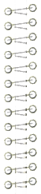
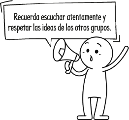

5
Transcurridos 20 días, analizamos
los resultados.
a.
¿En cuál de los
desechos se
observaron mayores cambios?
Marca.
Cáscara de plátano
Bolsa de té
Tapa plástica

b.
¿En cuál de los desechos se
observaron menos cambios?
Marca.
Cáscara de plátano
Bolsa de té
Tapa plástica

c.
¿A qué se debe la diferencia en los resultados?
d.
¿Qué ocurrió con la predicción?
6
Presentamos los resultados de forma oral.
Comparamos y discutimos con los otros grupos.
Comparamos y discutimos con los otros grupos.
ABP © SM
24